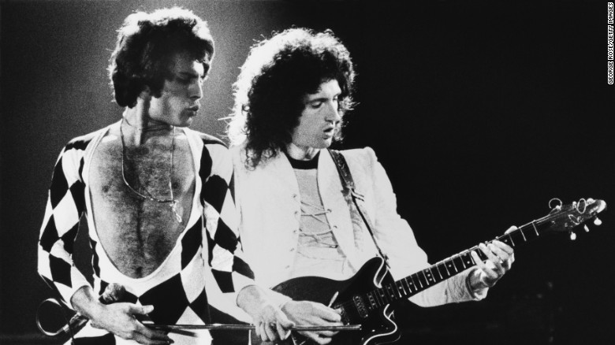
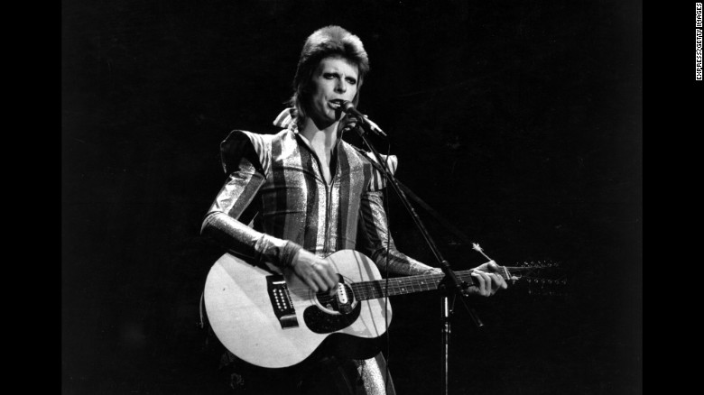
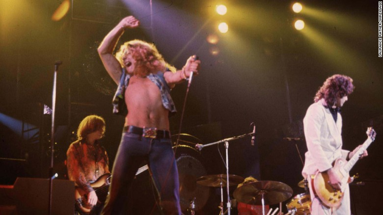

Top Music Artists of the 70s
Queen
Pop band who had the No.1 hit Bohemian Rhapsody. They were well known for Freddy Mercury's flamboyant voice.
David Bowie
David Bowie was a british singer-songwriter known for his androgynous style and wild alter egos. His music continues to inspire artists today.
Led Zeppelin
This 1970s hard rock band was one of the biggest of its time. The band is well known for the song "Stairway to Heaven" but they had many hit songs.